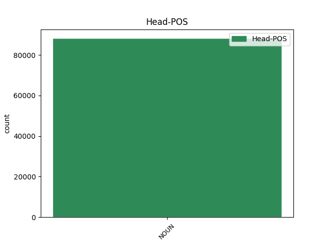

Distribution of features within this leaf

Agreement Rules sorted by frequency.
- When the dependent token is the modifer(mod) of the head token, and the head token is NOUN and the dependent token is NOUN.
1 Eine _ _ _ _ 0 _ _ _
2 Drosselung Drosselung NOUN NN Gender=Fem|Number=Sing|Person=3 0 _ _ _
3 der _ _ _ _ 0 _ _ _
4 Produktion Produktion NOUN NN Gender=Fem|Number=Sing|Person=3 2 mod _ _
5 sei _ _ _ _ 0 _ _ _
6 deshalb _ _ _ _ 0 _ _ _
7 notwendig _ _ _ _ 0 _ _ _
8 gewesen _ _ _ _ 0 _ _ _
9 . _ _ _ _ 0 _ _ _
1 Die _ _ _ _ 0 _ _ _
2 im _ _ _ _ 0 _ _ _
3 Safe _ _ _ _ 0 _ _ _
4 deponierten _ _ _ _ 0 _ _ _
5 Dateien _ _ _ _ 0 _ _ _
6 werden _ _ _ _ 0 _ _ _
7 verschlüsselt _ _ _ _ 0 _ _ _
8 und _ _ _ _ 0 _ _ _
9 digital _ _ _ _ 0 _ _ _
10 signiert _ _ _ _ 0 _ _ _
11 , _ _ _ _ 0 _ _ _
12 um _ _ _ _ 0 _ _ _
13 dadurch _ _ _ _ 0 _ _ _
14 dem _ _ _ _ 0 _ _ _
15 Nutzer Nutzer NOUN NN Gender=Masc|Number=Sing|Person=3 0 _ _ _
16 und _ _ _ _ 0 _ _ _
17 dem _ _ _ _ 0 _ _ _
18 Absender Absender NOUN NN Gender=Masc|Number=Sing|Person=3 15 conj _ _
19 zu _ _ _ _ 0 _ _ _
20 garantieren _ _ _ _ 0 _ _ _
21 , _ _ _ _ 0 _ _ _
22 dass _ _ _ _ 0 _ _ _
23 das _ _ _ _ 0 _ _ _
24 Dokument _ _ _ _ 0 _ _ _
25 unverändert _ _ _ _ 0 _ _ _
26 und _ _ _ _ 0 _ _ _
27 vor _ _ _ _ 0 _ _ _
28 unbefugtem _ _ _ _ 0 _ _ _
29 Lesen _ _ _ _ 0 _ _ _
30 geschützt _ _ _ _ 0 _ _ _
31 ist _ _ _ _ 0 _ _ _
32 . _ _ _ _ 0 _ _ _
1 Auf _ _ _ _ 0 _ _ _
2 der _ _ _ _ 0 _ _ _
3 diesjährigen _ _ _ _ 0 _ _ _
4 Fachmesse _ _ _ _ 0 _ _ _
5 LASER Laser NOUN NN Gender=Masc|Number=Sing|Person=3 0 _ _ _
6 2001 _ _ _ _ 0 _ _ _
7 ( _ _ _ _ 0 _ _ _
8 18. _ _ _ _ 0 _ _ _
9 bis _ _ _ _ 0 _ _ _
10 22. _ _ _ _ 0 _ _ _
11 Juni Juni NOUN NN Gender=Masc|Number=Sing|Person=3 5 appos _ _
12 ) _ _ _ _ 0 _ _ _
13 in _ _ _ _ 0 _ _ _
14 München _ _ _ _ 0 _ _ _
15 soll _ _ _ _ 0 _ _ _
16 das _ _ _ _ 0 _ _ _
17 Projekt _ _ _ _ 0 _ _ _
18 vorgestellt _ _ _ _ 0 _ _ _
19 werden _ _ _ _ 0 _ _ _
20 . _ _ _ _ 0 _ _ _
1 Dort _ _ _ _ 0 _ _ _
2 benutzen _ _ _ _ 0 _ _ _
3 etwa _ _ _ _ 0 _ _ _
4 61 _ _ _ _ 0 _ _ _
5 Prozent _ _ _ _ 0 _ _ _
6 den _ _ _ _ 0 _ _ _
7 Navigator _ _ _ _ 0 _ _ _
8 und _ _ _ _ 0 _ _ _
9 37 _ _ _ _ 0 _ _ _
10 Prozent Prozent NOUN NN Gender=Neut|Number=Plur|Person=3 12 subj _ _
11 das _ _ _ _ 0 _ _ _
12 Microsoft-Pendant Pendant NOUN NN Gender=Neut|Number=Sing|Person=3 0 _ _ _
13 . _ _ _ _ 0 _ _ _
1 Dies _ _ _ _ 0 _ _ _
2 ist _ _ _ _ 0 _ _ _
3 Ärzten Arzt NOUN NN Case=Dat|Gender=Masc|Number=Plur|Person=3 7 comp:obj _ _
4 und _ _ _ _ 0 _ _ _
5 Gesundheitspolitikern _ _ _ _ 0 _ _ _
6 ein _ _ _ _ 0 _ _ _
7 Dorn Dorn NOUN NN Gender=Masc|Number=Sing|Person=3 0 _ _ _
8 im _ _ _ _ 0 _ _ _
9 Auge _ _ _ _ 0 _ _ _
10 - _ _ _ _ 0 _ _ _
11 sie _ _ _ _ 0 _ _ _
12 befürchten _ _ _ _ 0 _ _ _
13 , _ _ _ _ 0 _ _ _
14 dass _ _ _ _ 0 _ _ _
15 sich _ _ _ _ 0 _ _ _
16 die _ _ _ _ 0 _ _ _
17 Patienten _ _ _ _ 0 _ _ _
18 zu _ _ _ _ 0 _ _ _
19 sehr _ _ _ _ 0 _ _ _
20 auf _ _ _ _ 0 _ _ _
21 Selbstdiagnosen _ _ _ _ 0 _ _ _
22 verlassen _ _ _ _ 0 _ _ _
23 , _ _ _ _ 0 _ _ _
24 die _ _ _ _ 0 _ _ _
25 auf _ _ _ _ 0 _ _ _
26 der _ _ _ _ 0 _ _ _
27 Basis _ _ _ _ 0 _ _ _
28 manchmal _ _ _ _ 0 _ _ _
29 fehlerhafter _ _ _ _ 0 _ _ _
30 oder _ _ _ _ 0 _ _ _
31 unvollständiger _ _ _ _ 0 _ _ _
32 Information _ _ _ _ 0 _ _ _
33 beruhen _ _ _ _ 0 _ _ _
34 . _ _ _ _ 0 _ _ _
1 Der _ _ _ _ 0 _ _ _
2 verwendet _ _ _ _ 0 _ _ _
3 als _ _ _ _ 0 _ _ _
4 Bildgeber _ _ _ _ 0 _ _ _
5 über _ _ _ _ 0 _ _ _
6 400000 _ _ _ _ 0 _ _ _
7 Spiegelchen _ _ _ _ 0 _ _ _
8 aus _ _ _ _ 0 _ _ _
9 hochreflektiver _ _ _ _ 0 _ _ _
10 Aluminiumfolie _ _ _ _ 0 _ _ _
11 , _ _ _ _ 0 _ _ _
12 so _ _ _ _ 0 _ _ _
13 breit _ _ _ _ 0 _ _ _
14 wie _ _ _ _ 0 _ _ _
15 ein _ _ _ _ 0 _ _ _
16 Fünftel Fünftel NOUN NN Gender=Neut|Number=Sing|Person=3 0 _ _ _
17 eines _ _ _ _ 0 _ _ _
18 menschliches _ _ _ _ 0 _ _ _
19 Haars Haar NOUN NN Case=Gen|Gender=Neut|Number=Sing|Person=3 16 mod@poss _ _
20 . _ _ _ _ 0 _ _ _
Disagree Examples:
1 Hinter _ _ _ _ 0 _ _ _
2 der _ _ _ _ 0 _ _ _
3 neuen _ _ _ _ 0 _ _ _
4 Firma _ _ _ _ 0 _ _ _
5 steht _ _ _ _ 0 _ _ _
6 unter _ _ _ _ 0 _ _ _
7 anderem _ _ _ _ 0 _ _ _
8 Lucent _ _ _ _ 0 _ _ _
9 Technologies _ _ _ _ 0 _ _ _
10 , _ _ _ _ 0 _ _ _
11 einer _ _ _ _ 0 _ _ _
12 der _ _ _ _ 0 _ _ _
13 größten _ _ _ _ 0 _ _ _
14 Anbieter _ _ _ _ 0 _ _ _
15 von _ _ _ _ 0 _ _ _
16 Equipment _ _ _ _ 0 _ _ _
17 für _ _ _ _ 0 _ _ _
18 Netzwerke Netzwerk NOUN NN Gender=Neut|Number=Plur|Person=3 0 _ _ _
19 und _ _ _ _ 0 _ _ _
20 Telekommunikation Telekommunikation NOUN NN Gender=Fem|Number=Sing|Person=3 18 conj _ _
21 . _ _ _ _ 0 _ _ _
1 20 _ _ _ _ 0 _ _ _
2 Millionen Million NOUN NN Gender=Fem|Number=Plur|Person=3 3 mod _ _
3 DSL-Anschlüsse Anschluß NOUN NN Gender=Masc|Number=Plur|Person=3 0 _ _ _
4 bis _ _ _ _ 0 _ _ _
5 2010 _ _ _ _ 0 _ _ _
1 Im _ _ _ _ 0 _ _ _
2 Auftrag Auftrag NOUN NN Gender=Masc|Number=Sing|Person=3 0 _ _ _
3 des _ _ _ _ 0 _ _ _
4 Bundeswirtschaftsministeriums Ministerium NOUN NN Case=Gen|Gender=Neut|Number=Sing|Person=3 2 mod _ _
5 erstellte _ _ _ _ 0 _ _ _
6 das _ _ _ _ 0 _ _ _
7 Wissenschaftliche _ _ _ _ 0 _ _ _
8 Institut _ _ _ _ 0 _ _ _
9 für _ _ _ _ 0 _ _ _
10 Kommunikationsdienste _ _ _ _ 0 _ _ _
11 ( _ _ _ _ 0 _ _ _
12 WIK _ _ _ _ 0 _ _ _
13 ) _ _ _ _ 0 _ _ _
14 die _ _ _ _ 0 _ _ _
15 Studie _ _ _ _ 0 _ _ _
16 " _ _ _ _ 0 _ _ _
17 Entwicklungstrends _ _ _ _ 0 _ _ _
18 im _ _ _ _ 0 _ _ _
19 Telekommunikationssektor _ _ _ _ 0 _ _ _
20 bis _ _ _ _ 0 _ _ _
21 2010 _ _ _ _ 0 _ _ _
22 " _ _ _ _ 0 _ _ _
23 . _ _ _ _ 0 _ _ _
1 Im _ _ _ _ 0 _ _ _
2 Auftrag _ _ _ _ 0 _ _ _
3 des _ _ _ _ 0 _ _ _
4 Bundeswirtschaftsministeriums _ _ _ _ 0 _ _ _
5 erstellte _ _ _ _ 0 _ _ _
6 das _ _ _ _ 0 _ _ _
7 Wissenschaftliche _ _ _ _ 0 _ _ _
8 Institut _ _ _ _ 0 _ _ _
9 für _ _ _ _ 0 _ _ _
10 Kommunikationsdienste _ _ _ _ 0 _ _ _
11 ( _ _ _ _ 0 _ _ _
12 WIK _ _ _ _ 0 _ _ _
13 ) _ _ _ _ 0 _ _ _
14 die _ _ _ _ 0 _ _ _
15 Studie Studie NOUN NN Gender=Fem|Number=Sing|Person=3 0 _ _ _
16 " _ _ _ _ 0 _ _ _
17 Entwicklungstrends Trend NOUN NN Gender=Masc|Number=Plur|Person=3 15 appos _ _
18 im _ _ _ _ 0 _ _ _
19 Telekommunikationssektor _ _ _ _ 0 _ _ _
20 bis _ _ _ _ 0 _ _ _
21 2010 _ _ _ _ 0 _ _ _
22 " _ _ _ _ 0 _ _ _
23 . _ _ _ _ 0 _ _ _
1 Hierin _ _ _ _ 0 _ _ _
2 prognostiziert _ _ _ _ 0 _ _ _
3 das _ _ _ _ 0 _ _ _
4 Institut _ _ _ _ 0 _ _ _
5 , _ _ _ _ 0 _ _ _
6 dass _ _ _ _ 0 _ _ _
7 es _ _ _ _ 0 _ _ _
8 im _ _ _ _ 0 _ _ _
9 Jahr _ _ _ _ 0 _ _ _
10 2010 _ _ _ _ 0 _ _ _
11 rund _ _ _ _ 0 _ _ _
12 20 _ _ _ _ 0 _ _ _
13 Millionen Million NOUN NN Gender=Fem|Number=Plur|Person=3 14 mod _ _
14 DSL-Anschlüsse Anschluß NOUN NN Gender=Masc|Number=Plur|Person=3 0 _ _ _
15 geben _ _ _ _ 0 _ _ _
16 wird _ _ _ _ 0 _ _ _
17 . _ _ _ _ 0 _ _ _